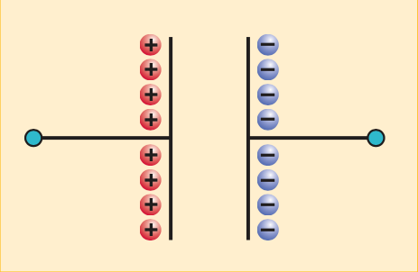
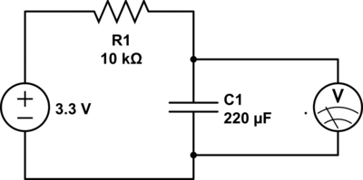
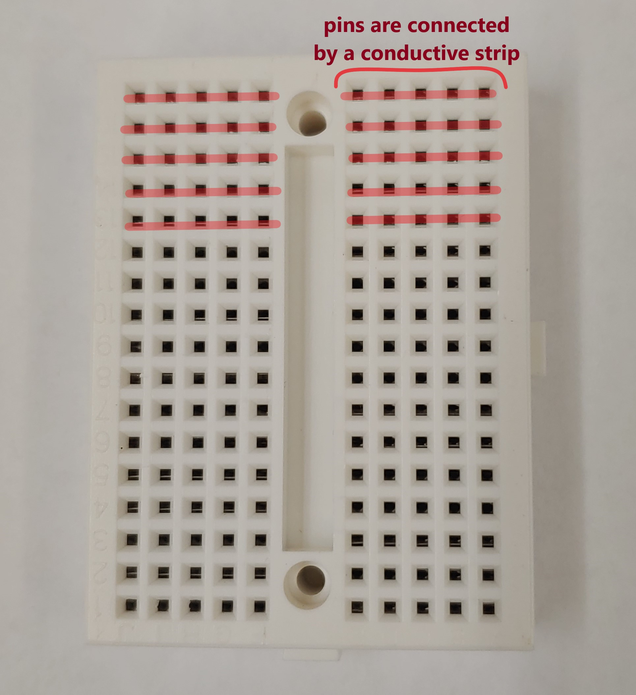
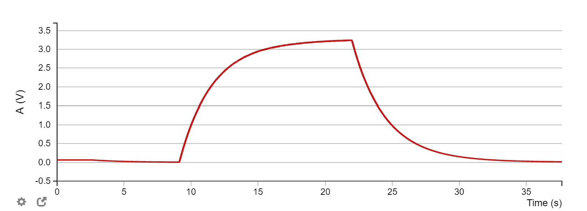
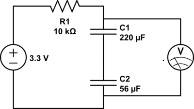
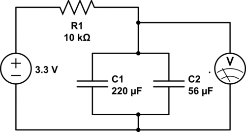

In this Part of the lab, we will review the concepts and mathematical descriptions of some common circuit elements. You need two separate bits of information from this section:
You will be making four circuits and using the equivalent capacitance (bit 1) to calculate the time constant of the RC circuit (bit 2) in this lab. This lab might seem long, but you are doing the same short experiment, with slight changes, four times in a row!
The longest part of this lab is the theory, which you should have covered in the corresponding PHYS4 lectures.If you are struggling with this part, please reach out to your TAs.
If there is a potential difference, electrons (negatively charged) will move from low potential to high potential. The movement of electrons forms current. Current is defined as the rate at which charges move:
Resistors will slow the rate at which charge flows. Current, resistance, and potential difference are related by Ohm’s Law:
where ΔV is the voltage across the resistor in Volts (V), R is the resistance of the resistor in Ohms (Ω), and I is the current in the resistor in Amperes (A).
Recall that for resistors in series, the equivalent resistance is given by
And for resistors in parallel, the equivalent resistance is given by
Question 1
A 5-kΩ resistor is placed in series with two 10-kΩ resistors in parallel. The entire circuit is connected to a power supply of 20 V. What is the voltage across each element?
A capacitor is a device that stores energy by means of two closely spaced plates separated by an insulating material. By connecting a capacitor to a battery source, we will be able to collect charge on the capacitor. The energy is stored as an electrostatic field.

The voltage across a capacitor is directly related to the amount of charge on the plates. A larger amount of charge results in a larger potential difference across the capacitor. The relation between the voltage across and the amount of charges on the capacitor is given by
where Q is the charge in Coulombs (C), C is the capacitance in Farads (F), and V is the voltage in Volts (V).
Using the definition of current (Equation 1), we have
which relates the current into a capacitor to the rate of change of the voltage. Note that it takes some time to build up charges. So the voltage across a capacitor cannot instantaneously increase.
Question 2
A 0.1-μF capacitor has 16 V across its terminals. How much charge does it hold?
Question 3
What is the current flowing into a 0.01-μF capacitor if the voltage across its terminals changes at a constant rate of 2 mV per second?
Before the switch is closed, the capacitor initially begins without charge and thus carries no voltage. At the instant the switch is closed, the charging process begins, and charge begins to build up on the plates. The voltage, however, cannot change instantaneously!
At this moment, because there is no charge on the plates, it is easy for charge to accumulate. The greatest amount of current flows at this first instant. As the current flows, the capacitor becomes charged, and its voltage builds up gradually. As the capacitor’s voltage increases, and hence has more charge, it becomes harder to add charge: gradually the current slows. Consequently, by Ohm's law, the voltage across the resistor decreases --- recall that the same current goes through all elements in series.
The charging process continues as the voltage on the capacitor asymptotically approaches that of the power source. At this point, the current decreases to 0, and voltage on the resistor goes to 0 as shown on the figure above.
As a rough analogy, this entire process is much like people walking down a hallway and packing into an elevator--- it's easiest to board the elevator when it is nearly empty. As it fills up, people have to move around and squeeze together to fit new people, slowing and eventually stopping the boarding process. At this point, the flow of people down the hallway stops once the elevator is full, as the queue for the next one.
Question 4
Why does the greatest amount of current flow initially? Why does it decrease as time passes?
Question 5
Why does the voltage across the resistor decrease to 0 V later in time?
Discharging a capacitor reverses the process. Say the fully charged capacitor has voltage . When the circuit is closed, the voltage on the capacitor will be dropped across the resistor, causing a current to flow. As the charges leave the capacitor, the voltage on the capacitor asymptotically falls to zero.
Question 6
Comment on how voltage changes across capacitor and resistor separately during the discharging process. You may use words or plots or both.
Combining equations (2) and (6) and rearranging, we get
Solving this integral, we find out that the equation for the capacitor discharging is described by
This indicates that the voltage across the capacitor decreases exponentially as current passes through. The value RC is defined as the time constant 𝛕. Therefore, the quantity RC has units of time, and the equation becomes
It is important to note that for one circuit, 𝛕 is constant.
Question 7
Write down the equation for a charging capacitor. You can assume that the fully charged capacitor has voltage .
In this lab, we will build the described RC circuit with a switchable battery source (iOLab device). When the battery source is turned on, the capacitor will charge up according to the equation above. When the battery is turned off, the capacitor will discharge instead.
In addition to calculating the time constant for different circuits, we will be wiring the capacitors in both series and parallel configurations. The equation for the equivalent capacitance for capacitors in series is
The equation for the equivalent capacitance for capacitors in parallel is
In this lab we will measure the time constant, , of four different circuit configurations. The procedure for each of these labs is fairly quick and virtually identical. After the initial identification of your circuit components and the set-up of your first circuit, you will only have to switch out elements and record new data for each exercise.
Materials needed:
Our first task is simply identifying the elements shipped with the iOLab kit. We will need to find the resistors and capacitors required for this lab.
Learning to read and identify resistors is a crucial skill in real laboratory work. Resistors are the small capsule-shaped elements with wires on either side. You should notice that each resistor has a set of four colored bands around its body. The order and color of these bands indicate the element’s resistance and tolerance -- i.e. its margin of error in percent.
In a 4-band resistor, the first three bands tell you the value of , and the band gives you the tolerance. To read your resistor, first we need to determine the correct reading direction. For 4-band resistors, there should be a larger gap between the and (tolerance) bands.
There are two ways you can use the colors to assign values -- either by using the lookup table below or by using an online calculator.

Prior to starting the experiments, you should use the color bands on each packet of resistors to identify and label their values. In total, you should have packs containing resistors with values:
The capacitors, which are black cylindrical elements with wires coming from the bottom, are much easier to identify: simply read off the values printed on the side. For the tolerance, find the letter in parenthesis and write down the corresponding tolerance form the look up table:

In total, you should find:
Question 8
In the following exercises, we will need:
Using the tolerance band, write down the values of these resistors with their uncertainty in the form:
Here should be an absolute uncertainty, not a percent. For example, if your tolerance was 1% on your 10-kΩ resistor, you would record the value as () kΩ. We will use this later for error analysis.
Now let’s set up 4 RC circuits. For each setup, you will measure the time constant and compare it to the theoretical value.
Materials needed:
For the first exercise, we are going to place a 220-μF capacitor in series with a 10-kΩ resistor. In addition, a voltmeter needs to be placed across the capacitor in order to visualize both charge-up and discharge situations. In this lab, our iOLab is both our voltmeter and power supply.

Question 9
a) Calculate the theoretical value of the time constant, for this RC circuit.
b) Using the uncertainty bounds of you capacitor and resistor calculate the error bound , of this measurement. To calculate the total uncertainty of a product of two values with independent error bounds, use the formula:
For a product
The error bound, of may be calculated as:
You are not required to know how to derive this, but interested students can learn more about this formula in Taylor's excellent Error Analysis Textbook. (The formula is derived in section 2.9)
c) Write your final result as as usual.
Exercise 1
We will be using our wires, elements, iOLab and breadboard to create the circuit. The instructions here look long only because there is no elegant way to explain circuit construction in words. It is suggested that you refer to the photo of a complete circuit (below step 5) while following the instructions. After you have set everything up, the wiring should make sense.
Set-up:


A picture is worth 1k words!
Once you have wired the circuit, you are ready to open the software and collect data.

We now want to collect some data from this curve to calculate :
Question 10
What are the values calculated from charge and discharge curves? Are they close? Is it sufficient to measure 𝛕 from only one of the curves? Explain your reasoning.
Question 11
(a) What is the experimental value of 𝛕 measured? (Use the average)
(b) Calculate the discrepancy with the theoretical value.
(c) Is the discrepancy much larger than ? If so, propose some reasons for this. (Name possible sources of systematic error, e.g., external factors like humidity or poor contact, that might lead to shorter discharge times, dying batteries, etc.)
Question 12
Calculate the theoretical value of the time constant and error bounds, , for this RC circuit.
Exercise 2
Repeat the procedure described in exercise 1 with a 2-kΩ resistor instead. This is now a new circuit with a new time constant.
Question 13
(a) What is the experimental value of 𝛕 measured?
(b) Calculate the discrepancy with the theoretical value.
(c) Is the discrepancy much larger than ? If so, propose some reasons for this.
Question 14
How is the discharge process qualitatively different compared to that for the setup in Exercise 1?

Question 15
(a) Calculate equivalent capacitance of the two capacitors in series.
(b) Calculate theoretical value of the time constant and the error bounds. Hint: The error for the this formula is more complicated, and is given by
Exercise 3
Repeat the procedure in 3.1 by adding a 56-μF capacitor in series in the circuit. You need to make sure that the voltmeter is probing across both capacitors.
Question 16
(a) What is the experimental value of 𝛕 measured?
(b) Calculate the discrepancy with the theoretical value.
(c) Is the discrepancy much larger than ? If so, propose some reasons for this.
Question 17
How is the discharge process qualitatively different compared to that for the setup in Exercise 1?

Question 18
(a) Calculate equivalent capacitance
(b) Calculate theoretical value of the time constant and the error bounds, . Hint: The error of a sum of values has the forumula
Exercise 4
Repeat the procedure in 3.1 by adding a 56-μF capacitor in parallel in the circuit. Again, the voltmeter should be measuring the voltage across both capacitors.
Question 19
(a) What is the experimental value of 𝛕 measured?
(b) Calculate the discrepancy with the theoretical value.
(c) Is the discrepancy much larger than ? If so, propose some reasons for this.
Question 20
How is the discharge process different compared to that for the setup in Exercise 3?
Question 21
If you wanted to decrease the time to charge a pair of capacitors, based on your experiment, should you connect them in series or in parallel?